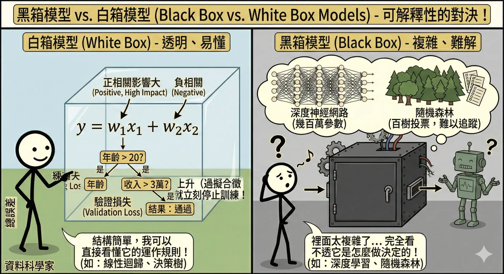
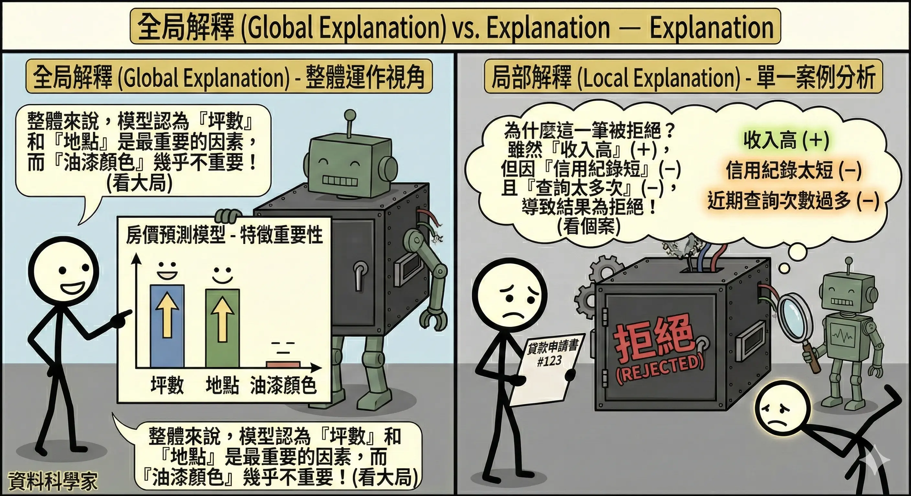
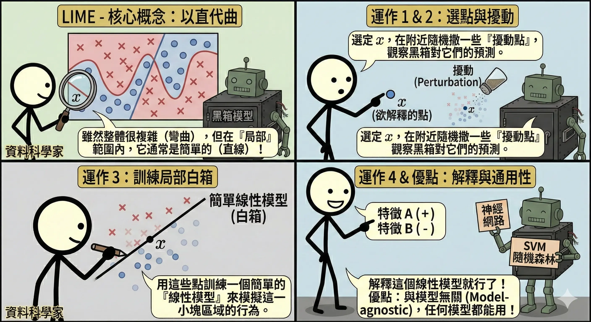
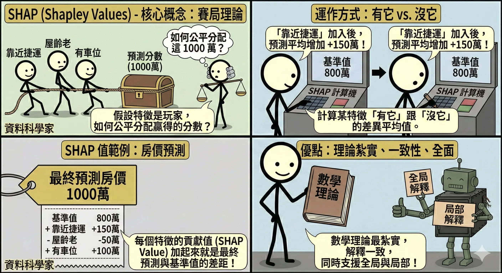
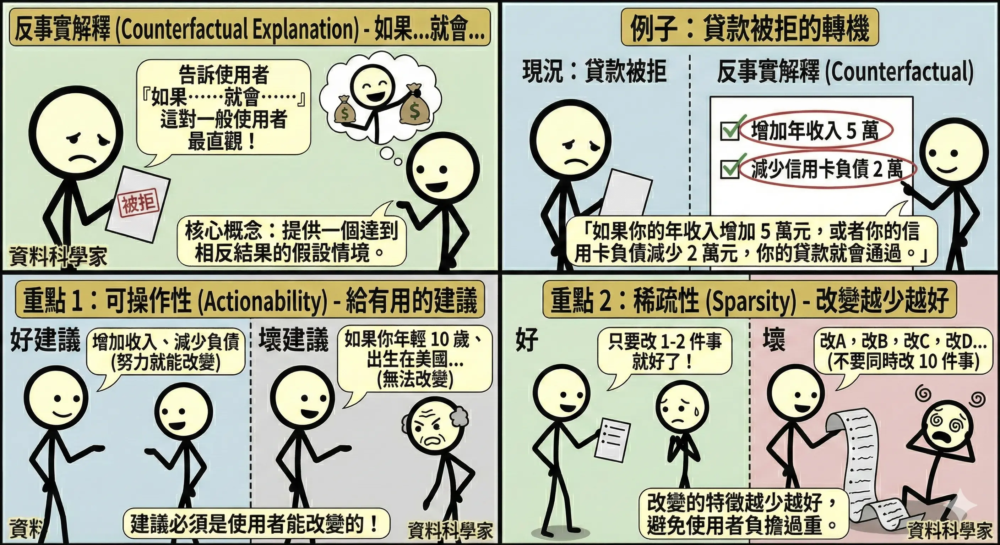

可解釋 AI (XAI)
隨著 AI 模型越來越複雜（尤其是深度學習），它們變成了「黑箱 (Black Box)」。我們把資料丟進去，答案跑出來，但沒人知道中間發生了什麼。在醫療、金融、法律等高風險領域，我們不能只知道「結果」，必須知道「原因」。這就是可解釋 AI (Explainable AI, XAI) 的使命。
XAI 的層次
黑箱模型 vs. 白箱模型
- 白箱模型 (White Box)：結構簡單，人類可以直接看懂。
- 線性迴歸：係數 w 直接代表特徵的影響力（正/負相關、大小）。
- 決策樹：規則清楚（如果年齡 > 20 且 收入 > 3萬，則…）。
- 黑箱模型 (Black Box)：結構複雜，人類無法直觀理解。
- 深度神經網路：幾百萬個參數，看不出意義。
- 隨機森林：幾百棵樹的投票結果，難以追蹤。

全局解釋 vs. 局部解釋
- 全局解釋 (Global Explanation)：
- 問題：這個模型整體來說是怎麼運作的？哪些特徵最重要？
- 例子：在預測房價時，模型認為「坪數」和「地點」是最重要的因素，「油漆顏色」不重要。
- 局部解釋 (Local Explanation)：
- 問題：為什麼這一筆特定的貸款申請被拒絕了？
- 例子：雖然這人收入高（正向因素），但因為「信用紀錄太短」（負向因素）且「近期查詢次數過多」（負向因素），綜合起來導致被拒絕。

解釋技術與工具
LIME (Local Interpretable Model-agnostic Explanations)
- 核心概念：雖然整個黑箱模型很複雜（像彎彎曲曲的曲線），但在「局部」範圍內，它通常是簡單的（像直線）。
- 運作方式：
- 選定想解釋的那個資料點 x。
- 在 x 附近隨機撒一些擾動過的資料點，並觀察黑箱模型對這些點的預測。
- 用這些點訓練一個簡單的線性模型（白箱）來模擬黑箱模型在這一小塊區域的行為。
- 解釋這個線性模型。
- 優點：與模型無關 (Model-agnostic)，任何模型（神經網路、SVM、隨機森林）都能用。

SHAP (Shapley Values)
- 核心概念：源自賽局理論 (Game Theory)。假設所有特徵是合作玩遊戲的玩家，最後贏得的分數（預測結果）該如何公平分配給每個玩家（特徵）？
- 運作方式：計算某個特徵「有它」跟「沒它」時，預測結果的差異平均值。
- 例如：預測房價 1000 萬。基準值是 800 萬。
- 「靠近捷運」貢獻了 +150 萬。
- 「屋齡老」貢獻了 -50 萬。
- 「有車位」貢獻了 +100 萬。
- 優點：數學理論最紮實，能提供一致性 (Consistency) 的解釋，且同時支援全局與局部解釋。

特徵重要度 (Feature Importance)
- 概念：直接列出哪些特徵對模型的貢獻最大。
- 應用：隨機森林 (Random Forest) 和 XGBoost 內建特徵重要度排序（基於分裂時帶來的資訊增益）。
- 限制：只能看全局，不能解釋單一筆預測。
反事實解釋 (Counterfactual Explanation)
- 核心概念：告訴使用者「如果做什麼改變，結果就會不同」。
- 大多數 XAI 技術（如 SHAP）是在解釋「為什麼你會被拒絕」（回顧過去）。
- 反事實解釋是在告訴你「怎麼做才能被接受」（展望未來）。
- 類比：醫生的處方。
- 解釋 (SHAP)：「你生病是因為血壓高和缺乏運動。」（分析原因）
- 反事實 (Counterfactual)：「如果你每天運動 30 分鐘並少吃鹽，你就會恢復健康。」（提供行動指南）
- 例子：
- 現況：小明的貸款申請被 AI 拒絕了。
- 解釋：「如果你的年收入從 50 萬增加到 55 萬，或者你的信用卡負債減少 2 萬元，你的貸款就會通過。」
- 三大原則：
- 可操作性 (Actionability)：建議必須是使用者能改變的。
- 好建議：增加收入、減少負債、考取證照。
- 壞建議：如果你年輕 10 歲、如果你是女生、如果你出生在美國（這些都改不了，講了只會讓人生氣）。
- 稀疏性 (Sparsity)：改變的特徵越少越好。
- 不要叫使用者同時改 10 件事（如：收入加倍、換工作、搬家、結婚…），這太難做到了。通常建議 1-2 個最有效的改變。
- 有效性 (Validity)：這個改變必須真的能讓 AI 的預測結果翻盤（從 Reject 變 Accept）。
- 可操作性 (Actionability)：建議必須是使用者能改變的。

本章總結與考點提示
核心概念回顧
XAI 是建立 AI 信任的關鍵。
- 模型類型：
- 白箱：線性迴歸、決策樹 (簡單、可解釋)。
- 黑箱：深度學習、隨機森林 (複雜、難解釋)。
- 解釋範圍：
- 全局：整體特徵重要性。
- 局部：單一案例的判斷依據。
- 技術工具：
- LIME：局部線性近似 (Model-agnostic)。
- SHAP：賽局理論 (公平分配貢獻)。
- Counterfactual：如果…就會… (行動建議)。
AI 應用規劃師認證考點
常考題型與解題策略：
- 情境選擇題：
- 例題：「銀行拒絕貸款，客戶要求解釋，哪種方法最適合？」
- 解答：反事實解釋 (Counterfactual)。因為客戶想知道「怎麼做才能通過」。
- 例題：「想知道模型整體最看重哪些特徵？」
- 解答：全局特徵重要性 (Global Feature Importance) 或 SHAP Summary Plot。
- 黑白箱辨析：
- 例題：「下列哪個模型的可解釋性最高？」
- 解答：決策樹 > 線性迴歸 > 隨機森林 > 神經網路。
- 工具特性題：
- 例題：「LIME 的核心思想是什麼？」
- 解答：在局部範圍內，用簡單的線性模型來模擬複雜的黑箱模型。
記憶口訣
- LIME：「以管窺天」（局部近似）。
- SHAP：「分錢分得平」（賽局理論）。
- Counterfactual：「早知如此，何必當初」（如果…就會…）。
延伸思考
- 可解釋性與準確率通常存在什麼關係？（Trade-off。通常模型越複雜準確率越高，但可解釋性越低。XAI 的目標就是打破這個權衡）。